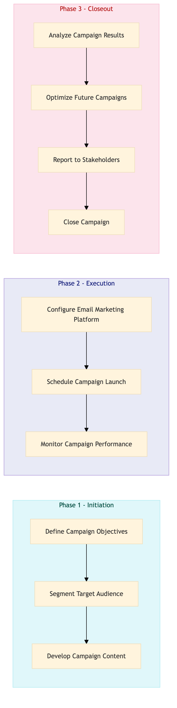

| Role | Steps |
|---|---|
| Marketing Manager | 1.1 1.2 3.1 3.2 3.3 |
| Creative Director | 1.3 |
| Digital Marketing Specialist | 2.1 2.2 2.3 3.4 |
| Step | Name | Role | System | Input | Output | KPI | Dec? | Exc? | Pain Point / Risk |
|---|---|---|---|---|---|---|---|---|---|
| 1.1 | Define Campaign Objectives | Marketing Manager | Oracle OPERA Cloud | Campaign brief | Campaign objectives document | Less than 2 hours | N | Y | Balancing multiple campaign goals |
| 1.2 | Segment Target Audience | Marketing Manager | Oracle OPERA Cloud, Marriott Bonvoy CRM | Campaign objectives document | Audience segment list | Less than 4 hours | N | Y | Accurate segmentation for personalization |
| 1.3 | Develop Campaign Content | Creative Director | Adobe Creative Suite, Oracle OPERA Cloud | Audience segment list | Email templates and creative assets | Less than 8 hours | N | Y | Creative alignment with brand guidelines |
| 2.1 | Configure Email Marketing Platform | Digital Marketing Specialist | Oracle OPERA Cloud, Salesforce | Email templates and creative assets | Configured email campaign in the platform | Less than 2 hours | N | Y | Platform integration issues |
| 2.2 | Schedule Campaign Launch | Digital Marketing Specialist | Oracle OPERA Cloud, Salesforce | Configured email campaign in the platform | Scheduled launch date and time | Less than 1 hour | N | Y | Timing conflicts with other campaigns |
| 2.3 | Monitor Campaign Performance | Digital Marketing Specialist | Oracle OPERA Cloud, Salesforce, Microsoft Power BI | Scheduled launch date and time | Campaign performance report | Real-time monitoring | Y | N | Data interpretation for optimization |
| 3.1 | Analyze Campaign Results | Marketing Manager | Oracle OPERA Cloud, Salesforce, Microsoft Power BI | Campaign performance report | Analysis document with insights and recommendations | Less than 4 hours | N | Y | Interpreting complex data for actionable insights |
| 3.2 | Optimize Future Campaigns | Marketing Manager | Oracle OPERA Cloud, Salesforce | Analysis document with insights and recommendations | Updated campaign strategy | Less than 8 hours | N | Y | Implementing changes based on feedback |
| 3.3 | Report to Stakeholders | Marketing Manager | Oracle OPERA Cloud, Salesforce | Updated campaign strategy | Stakeholder presentation and report | Less than 2 hours | N | Y | Presenting findings in a clear manner |
| 3.4 | Close Campaign | Digital Marketing Specialist | Oracle OPERA Cloud, Salesforce | Stakeholder presentation and report | Campaign closure documentation | Less than 1 hour | N | Y | Ensuring all data is securely archived |
A structured process document for email marketing and CRM campaigns at a full-service Marriott hotel using Oracle OPERA Cloud PMS.